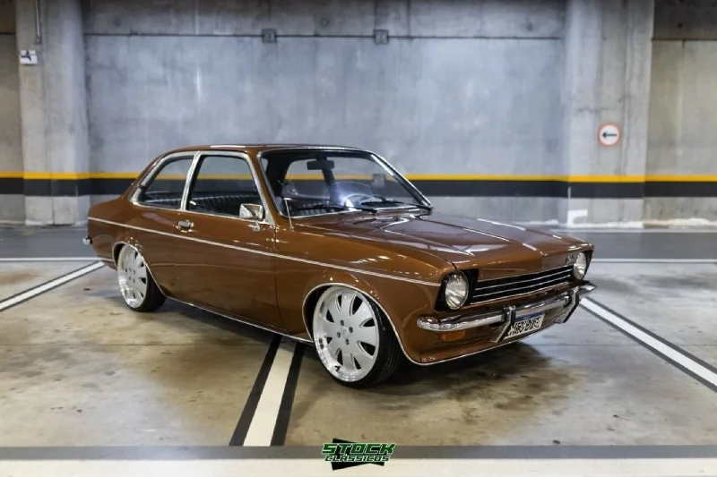

O Chevette Tubarão é o apelido carinhoso da primeira e mais icônica fase do Chevrolet Chevette no Brasil, produzida entre 1973 e 1977. Ele ganhou esse nome por conta do desenho da sua dianteira: a grade frontal e os faróis embutidos criavam um perfil agressivo e pontudo que lembrava o focinho de um tubarão.

O Design Marcante
-
A Frente: O visual "bicudo" com os faróis redondos para dentro da carroceria e as lentes das setas nos cantos do para-lama davam a identidade visual única do modelo.
-
A Traseira: Trazia lanternas pequenas e horizontais (frequentemente chamadas de "lanternas de VW TL" por quem brinca com carros antigos, embora fossem exclusivas dele) e uma queda suave no teto, estilo fastback.